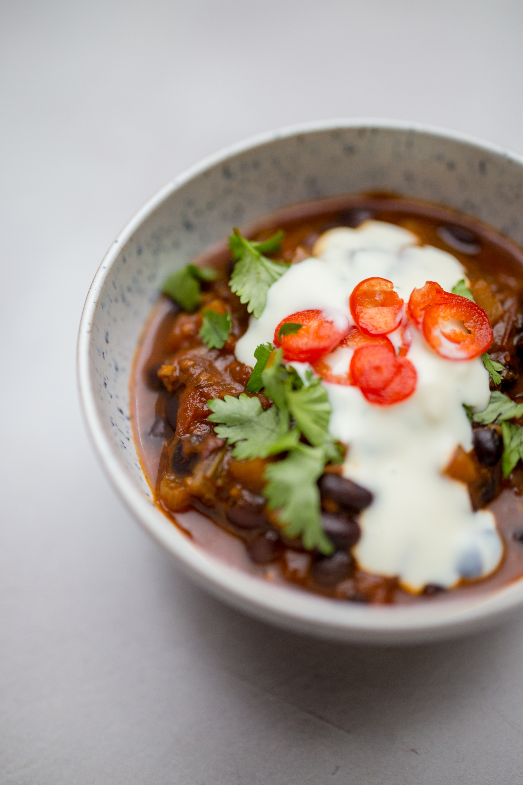

Vegan Chilli

Description
Here's the ultimate vegan chili recipe! Everyone loves chili,
and it's the perfect way to make vegetables taste
delicious. It's hard to find someone who will turn
this one down! It's full of savory flavor starring beans,
quinoa, and a hint of adobo sauce for complexity.
Recipe source: acouplecooks
Ingredients
- 2 28-ounce cans fire roasted diced tomatoes, divided
- 1 small carrot
- 1 cup parsley leaves and tender stems, loosely packed
- 2 tablespoons vegan Worcestershire sauce (or use this substitute)
- 1 tablespoon adobo sauce (from 1 can chipotle peppers in adobo sauce), plus more to taste
- 1 large yellow onion
- 1/2 green bell pepper
- 2 tablespoons olive oil
- 1 15-ounce can crushed tomatoes, fire roasted if possible
- 1 15-ounce can pinto beans, drained
- 1 15-ounce can black beans, drained
- 1/2 cup dry quinoa
- 1 tablespoon each chili powder and garlic powder
- 1 teaspoon each onion powder, cumin and oregano
- 1 1/2 teaspoons kosher salt, plus more to taste
- 1/4 teaspoon ground black pepper
Steps
- In a blender, blend the one can of diced tomatoes,
carrot (peeled and chopped into a few pieces), parsley,
Worcestershire sauce,
and adobo sauce until fully combined.
- Dice the onion and green pepper. In a large pot or
Dutch oven, heat the olive oil over medium high heat.
Add the onion and green pepper
and sauté for about 6 to 7 minutes until tender.
- Carefully add the blended vegetables, the second can
of diced tomatoes, the crushed tomatoes, drained beans,
quinoa, spices, kosher salt, and ½ cup water.
Simmer gently for 25 to 30 minutes until the quinoa
is tender and cooked through, stirring occasionally.
Taste and add additional salt and adobo sauce
as desired (we added 1 teaspoon adobo
sauce and 1/4 teaspoon kosher salt).